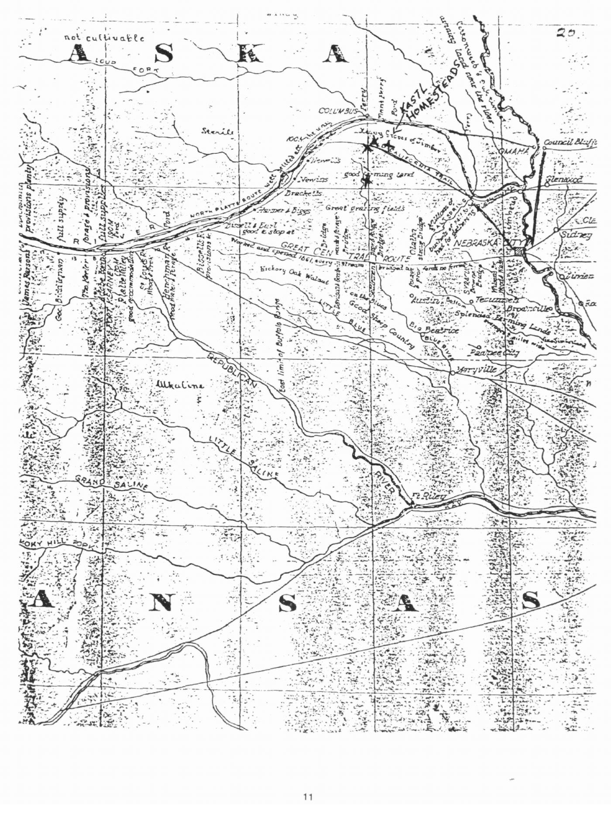

The book · The Kastls: in Pioneer Nebraska
Page 11 Map


Transcription
![Full-page photocopy of an old hand-lettered map of eastern Nebraska and Kansas territory (large lettering '...ASKA' at top and 'ANSAS' at bottom) showing rivers (Loup Fork, Platte, Little Blue, Big Blue, Republican, Little Saline, Grand Saline, Smoky Hill Fork), the North Platte Route, the Great Central Route and the California Trail, with towns such as Columbus, Omaha, Council Bluffs, Glenwood, Nebraska City, Sidney, Tecumseh, Brownville, Beatrice, Pawnee City, Marysville, Fort Kearney and Ft. Riley. A later hand-added annotation 'KASTL HOMESTEADS' with an arrow points to two star marks between Columbus and Omaha, south of the Platte near 'Groves of Timber' and 'good farming land'.](../../media/photos/s013-ph1.jpg)
Transcriber’s notes
Map page with no running text. The number '20' in the top-right corner belongs to the reproduced map (original plate/page number), not the book's page number. Legible map labels (old handwriting, many uncertain): 'not cultivable', 'Loup Fork', 'Sterile', 'Columbus', 'Ferry', 'KASTL HOMESTEADS', 'Groves of Timber', 'California Trail', 'Omaha', 'Council Bluffs', 'Glenwood', 'good farming land', 'Great grazing fields', 'Newells', 'Nevins', 'Bracketts', 'Harper & Biggs', 'Bissell & Earl good & stop at', 'North Platte Route', 'Great Central Route', 'Worked and opened 1861, every stream bridged', 'Hickory Oak Walnut', 'Nebraska City', 'Sidney', 'Tecumseh', 'Austin', 'Brownville', 'Splendid Farming Lands', 'Good Sheep Country', 'Big Beatrice', 'Blue River', 'Little Blue', 'Pawnee City', 'Marysville', 'Alkaline', 'Republican River', 'Little Saline', 'Grand Saline', 'Ft. Riley', 'Smoky Hill Fork', 'Fort Kearney', 'East limit of Buffalo Range', 'James Parsons provisions plenty'. The prose on p.10 (s012) ends mid-sentence and resumes after this map page.